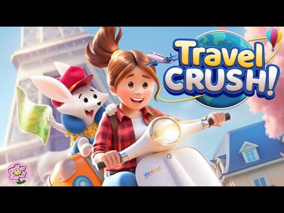

Travel Crush
- Built the core match-3 engine and an in-editor level designer, so designers could play and tune levels without leaving Unity
- Dynamic difficulty system that auto-balances levels against player skill
- AI-driven automated level playtesting for bug detection and difficulty analytics
- Live-ops event system enabling no-code content delivery
- Custom AssetBundle delivery system for grouping and background-downloading assets, built before Unity Addressables was released
- Social stack across Unity client and Python backend: friends graph, notifications, Redis leaderboards, player gifts
- Backend migration from Python/Tornado to BrainCloud BaaS